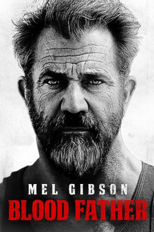

#4606 Blood Father
 gesehen am 24.10.2016
gesehen am 24.10.2016
 
 IMDB-Wertung: 6.5 / 10
IMDB-Wertung: 6.5 / 10  Tomatometer: 89
Tomatometer: 89  Metascore: 0
Metascore: 0 
Ein früherer Ganove möchte wieder eine Beziehung zu seiner 16 Jahre alten Tochter herstellen. Diese hat zur Zeit jedoch andere Probleme, denn sie wird von Drogen-Dealern bedroht. Es ist dan der Zeit, dass ein Vater sich um sein Mädchen kümmert...
Jahr: 2016
Dauer: 88 Minuten
FSK: 16
Land: Frankreich Studio: Splendid FilmTonspuren: DD5.1 - ,
Untertitel: Deutsch,
Auflösung: 1080p (1920x808) Größe: 6952 MB
Genre: Action, Krimi, Thriller
Regisseur: Jean-François Richet
Drehbuch: Alan Sharp
Soundtrack:
Darsteller:
 Mel Gibson als Link
Mel Gibson als Link Erin Moriarty als Lydia
Erin Moriarty als Lydia Diego Luna als Jonah
Diego Luna als Jonah Michael Parks als Preacher
Michael Parks als Preacher William H. Macy als Kirby
William H. Macy als Kirby Miguel Sandoval als Arturo Rios
Miguel Sandoval als Arturo Rios Dale Dickey als Cherise
Dale Dickey als Cherise Richard Cabral als Joker
Richard Cabral als Joker Daniel Moncada als Choop
Daniel Moncada als Choop- Ryan Dorsey als Shamrock
 Raoul Max Trujillo als The Cleaner
Raoul Max Trujillo als The Cleaner- Katalina Parrish als Link's Client
- Lucien Dale als Blonde Boy
- Joanne Camp als Cashier
 Thomas Mann als Jason Motel Clerk
Thomas Mann als Jason Motel Clerk Tait Fletcher als Bartender
Tait Fletcher als Bartender Vic Browder als Count
Vic Browder als Count- Genia Michaela als Woman Topango
 Luce Rains als Trucker
Luce Rains als Trucker- Christopher Atwood als C.O. Imperial Valley
 Christopher W. Garcia als Sunburned Boy
Christopher W. Garcia als Sunburned Boy- Rich Chavez als Maximum Security Prisoner , uncredited
- Lyle DeRose als Biker , uncredited
- Madison Fogle als Movie Theater Patron , uncredited
- Chester Gayao als Male Clubber , uncredited
- Alex Gopal als Movie Goer , uncredited
- Christina Gopal als Movie Goer , uncredited
- Julian Gopal als Movie Goer , uncredited
 Slim Khezri als Detective , uncredited
Slim Khezri als Detective , uncredited- Robert Louder als Biker , uncredited
- Cheo Tapia als Movie Theater Patron , uncredited
- Brandi Cochran als Lydia's Mother
- Cameron Cipta als Freckles
- Chris Livingston als McCoy
- Tony Whitecrow als Gray Hair
- Lori Dillen als Sheila
- Nicole Brady als News Anchor #1
- Tom Joles als News Anchor #2
- Rick Anglada als Detective , uncredited
- Tara Elliott als California Girl , uncredited
- Melissa-Lou Ellis als California Club Girl , uncredited
- William Fogle als Movie Theater Patron , uncredited
- Billy Fuessel als Driver , uncredited
- Rodger Larance als Biker , uncredited
- Gerry Medina als Movie Patron , uncredited
- Julianne Medina als Movie Theater Patron , uncredited
- Fred Padilla als Inmate , uncredited
- Brittney Scavo als Party-Goer , uncredited
- Jack T. Silliman als Prison Security Officer , uncredited
- Damon Somers als Dead Boyfriend , uncredited
Datei: X:\2016(A-F)\Blood Father (2016, FSK16, 1920x808).mkv seit 21.10.2016
Festplatte: HD 2016(A-Z)
 Es gibt insgesamt 147 Filme in der Gruppe '2016(A-F)'
Es gibt insgesamt 147 Filme in der Gruppe '2016(A-F)'